|
Langley Research CenterTurbulence Modeling Resource |
Jump to: SA Results, SA-QCR2000 Results, SSTm Results, Wilcox2006-klim-m Results, K-kL-MEAH2015 Results
Return to: Fully-Developed Channel Flow Validation Intro Page
Return to: Turbulence Modeling Resource Home Page
2D Fully-Developed Channel Flow at High Reynolds Number Validation Case
SSG/LRR-RSM-w2012 Model Results
Link to SSG/LRR-RSM-w2012 equations
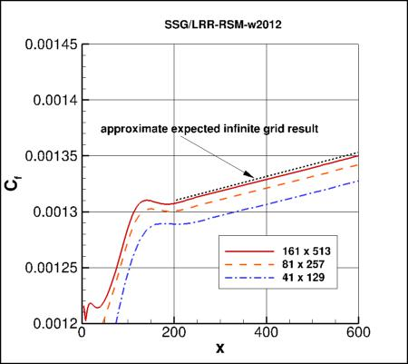
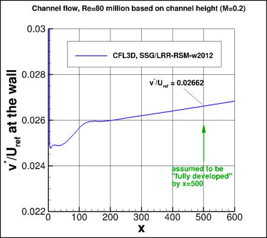
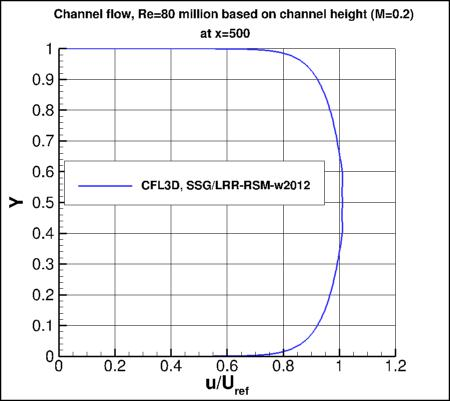
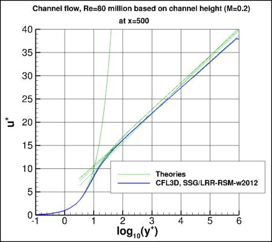
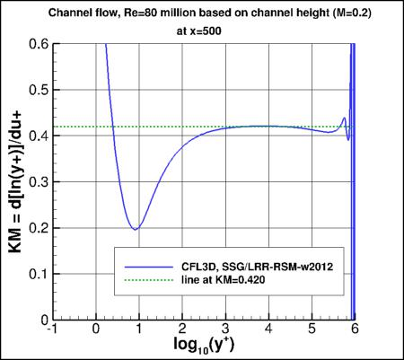
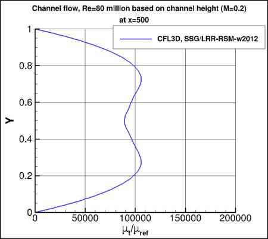
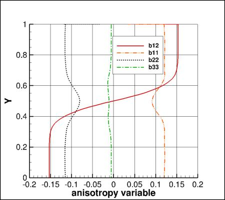
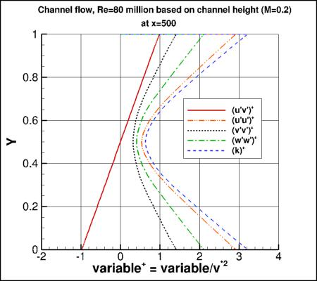
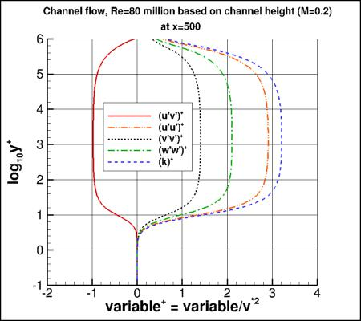
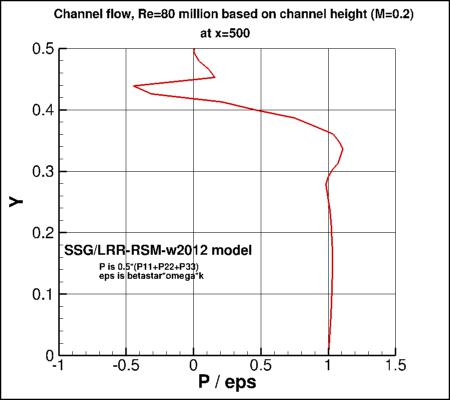
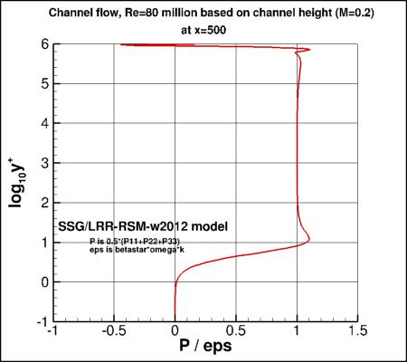
Above SSG/LRR-RSM-w2012 results are from CFL3D on the finest 161x513 grid.
CFL3D used freestream turbulence intensity=0.039% and freestream turbulent viscosity (relative to laminar)=0.009
(additional details can be found in the CFL3D User's Manual, Appendix H).
Please read note 5 on Notes on running CFD page.
Note that these are compressible code results; results will be somewhat different for incompressible codes.
In fact, for incompressible flow, the Cf and v*/Uref should become constant (moving downstream) rather
than slowly linearly increasing as shown here.
Note that the quantity v* (as defined in
White, F. M., Viscous Fluid Flow, McGraw-Hill, New York, 1974, pp. 471-474) is often referred to as u_tau.
Note also that Uref used in the above plots is not bulk velocity, but rather
the velocity at the reference position upstream where M=0.2.
The density (used to compute Cf) is also referenced there.
Results are assumed to be sufficiently "fully developed" by
x=500. Looking at the "Karman Measure" (KM), the value of
"kappa" produced by this turbulence model is close to 0.420 over much of the log layer.
The results using this model are somewhat non-smooth near the center of the channel (see above plots of u or KM).
The reason for this behavior is not currently known.
The anisotropy tensor is given by bij=uiuj/(2k)-delij/3. The anisotropy variables are
approximately constant through much of the boundary layer. This model yields approximately: b12=-0.153, b11=0.120,
b22=-0.1145, and b33=-0.005.
It is shown that the P/eps for this model is approximately 1 in the log region (log10(y+) between about 2 and 5).
CFL3D results are given here:
ssglrrrsm_cf_vs_x_cfl3d.dat,
ssglrrrsm_utau_vs_x_cfl3d.dat,
ssglrrrsm_u_cfl3d.dat,
ssglrrrsm_u+y+KM_cfl3d.dat,
ssglrrrsm_mut_cfl3d.dat,
ssglrrrsm_bij_cfl3d.dat,
ssglrrrsm_plus_cfl3d.dat,
ssglrrrsm_povere_cfl3d.dat.
A typical CFL3D input file is:
ssglrrrsm_cfl3d_typical.inp.
Jump to: SA Results,
SA-QCR2000 Results,
SSTm Results,
Wilcox2006-klim-m Results,
K-kL-MEAH2015 Results Return to: Fully-Developed Channel Flow Validation Intro Page Return to: Turbulence Modeling Resource Home Page
Recent significant updates: Responsible NASA Official:
Ethan Vogel
02/01/2022 - added mention of expected results for incompressible flow
09/17/2019 - added plots of P/eps
09/16/2019 - faulty link corrected
Page Curator:
Clark Pederson
Last Updated: 02/01/2022